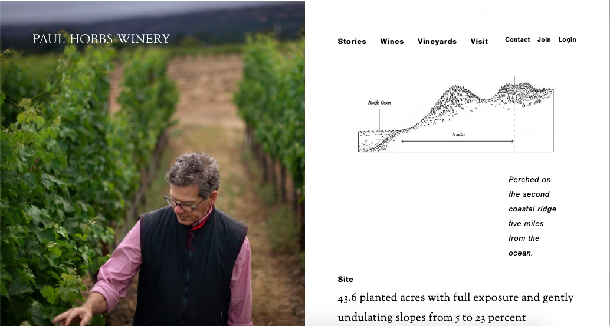
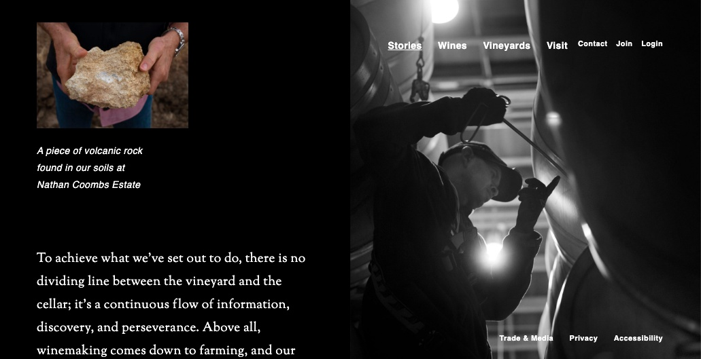
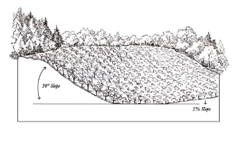

PAUL HOBBS WINES / Sonoma, California
Digital Brand Experience
Brand / Digital / Agency Leadership
Website refresh and design-agency management for Paul Hobbs Wines, evolving the digital expression of the brand while coordinating the external creative resources responsible for execution.
THE WORK


